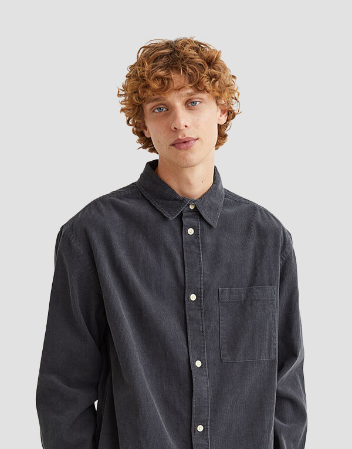

商品图片

relaxed-corduroy-shirt.jpg
600 × 765 px · 图片示例
由图片识别固有尺寸
替换图片图片描述
灯芯绒衬衫商品图
查看媒体详情
媒体Key与固有尺寸保留在这里；替换图片后同步更新。

600 × 765 px · 图片示例
由图片识别固有尺寸
替换图片媒体Key与固有尺寸保留在这里；替换图片后同步更新。
静态示意：用于比较布局与状态，控件不会操作后台。